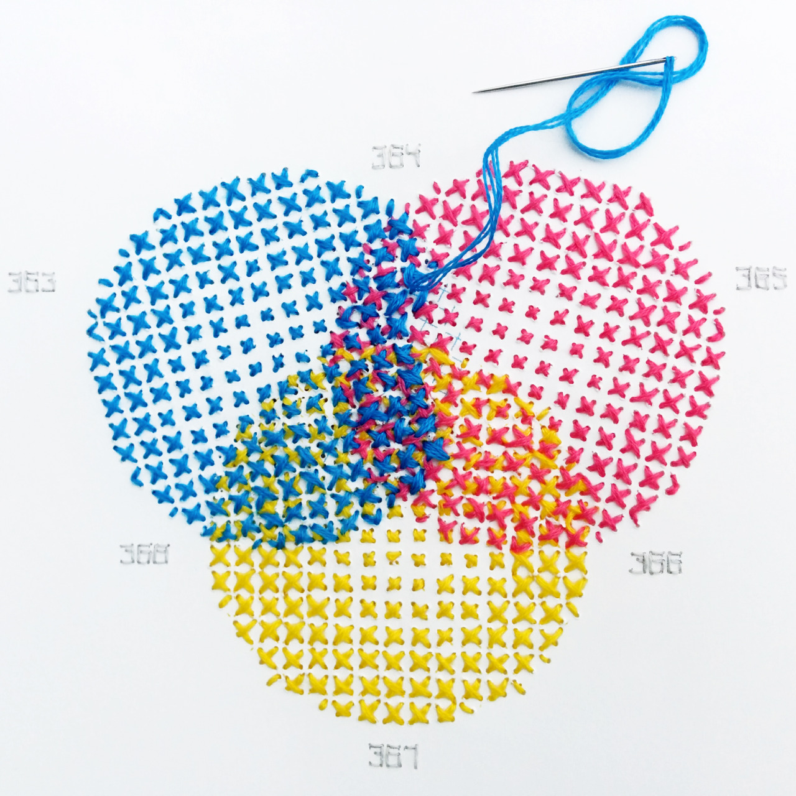

设计周刊 Design Weekly #52
📕 设计资源
20 best fonts for websites in 2021
https://www.editorx.com/shaping-design/article/best-fonts-for-websites
字体和排版是网页设计中的重要角色，选择合适的字体可以更好的实现好的用户体验。文中以网络安全字体规则为前提，筛选了 20 种适用于网站的最佳字体（包含免费和付费，文内有链接）
Streamline Icons 3.0
世界上最大的图标网站Streamline icons 更新了 3.0 版本，包含了 30000+图标，其中 53 个类别，720 个子类别，每款三种不同的样式设计，文件类型包括：iconjar、sketch、fig、xd、svg、ai、pdf、png，应有尽有啦。设计大咖托比亚斯·范·施耐德（TOBIAS VAN SCHNEIDER）直言使用过的唯一图标集，永远唯一的一个。网站中的图标特效很有趣。目前免费款可以下载所有 png，其他版本有相应的收费标准。（公众号内回复 icons 可以获得 30000个所有 png 和 300个 svg 图标）
The Component Gallery
https://component.gallery/components/
基于设计系统实例的最新界面组件库。主要是为了解决前端开发过程中重新重新造轮子、命名困难的问题，灵感来源于《A Pattern Language》。网站本身使用网格对各种组件进行了分类，你可以通过命名的排序方式查找自己想要的内容，主要的包含了 Componets 和 Design Systerm 两大内容。再也不用担心命名的问题咯。
📗 设计文章
How to write inclusive, accessible digital products
https://uxdesign.cc/how-to-write-inclusive-accessible-digital-products-2f4b35ec59a2
如何写出具有包容性、无障碍的界面文案。
界面文案是用户体验设计中很重要的一个细节，作者建议从读出你的文案开始，按照以下 8 条写作规则写出很好的文案。
- 清晰易懂
- 使用包容性的语言（不要在各种主义的雷区跳舞）
- 尊重用户
- 使用中性占位符
- 不要在行为召唤按钮上耍小聪明
- 使用常规格式测试文本
- 使用通用词汇
- 添加替代文字和标题
如何在 Figma中管理设计工作流程
https://design.zeta.in/organising-design-work-in-figma-a-systemic-guide-and-framework-6b9839d7adff
Zeta 设计团队（之前有推荐过他家的文章哦）使用 Figma 创建的工作流程，通过自上而下的信息结构方法，解决了产品迭代过程中经常遇到的问题：项目管理、设计反馈、项目协作等。
PM+Design合作的五个技巧
https://www.lennysnewsletter.com/p/design-product-management-partnership
原 Airbnb 产品负责人Lenny携各大厂牛人的解答社区，每周为付费用户解答产品、增长等方面的问题，内容非常丰富，免费用户可以通过订阅每月获得一封邮件。这次的内容是解答关于和团队设计师合作的5 点建议。
📘 设计案例
Logo 设计到尽头了么？
https://uxdesign.cc/is-the-end-near-for-flat-logo-design-4010d1cca157
近期小米与原研哉合作的新 Logo 引起了大家的热议，从某种角度来说，完美形成了一波营销。
从通用汽车、汉堡王再到品客近期的品牌变革，很多公司都在采用 logo 重设计的趋势。这篇文章从一个非平面设计师的角度，讲述了 logo 和品牌重新设计的 2 个驱动因素：技术和市场。
大家可以在众说纷坛中，从这两个角度了解下品牌重新设计的分析。
我爱巴黎，却只爱巧克力上的巴黎
https://www.topys.cn/article/31556
巧克力品牌Le Chocolat des Français，它们最近的包装设计，帮你直接截取了最具有城市特质的巴黎，忽视掉那些让人不快的景象。
浪漫的拥吻，是发生在成群的醉鬼当中；诱人的红鞋，踩在遍地的垃圾之上；公园里是穿着“爷基尼”的大叔，自由地晒着毛茸茸的肚腩；还有，无数人听得最多的浪漫法语并非是boujour，而是merde！法国品牌吐起槽来，果然很厉害，连自己都不放过。顺便一脚，将无数人对于巴黎的美梦踩得稀碎。但你别忘了，真正出现在包装上，却是巴黎最美好的一面。
用简单的笔触勾勒出条纹衫、高卢雄鸡、贝雷帽和埃菲尔铁塔，寥寥几笔，就带上了浓浓的法国风情。

📙 设计灵感
火爆ins的小恐龙漫画，每一篇都扎心了
https://www.shejipi.com/556383.html
Ins 上人气火爆的恐龙漫画-Dinos And Comics。作者在平平淡淡的生活日常中敏锐地捕捉到了人们的困境和矛盾的状态，再放大聚焦到漫画中，让无数网友直呼“扎心”。来看看这群又萌又丧的小恐龙是如何圈粉的。
无墨水 CMYK 刺绣色板
https://www.topys.cn/article/31476
艺术家伊夫林·卡西科夫（Evelin Kasikov）以四色打印中的的半色调网点样式通过刺绣的不同组合旋转，形成了丰富的色彩，用 2194647 针的全手工刺绣，创作出了400 种颜色的色板。
